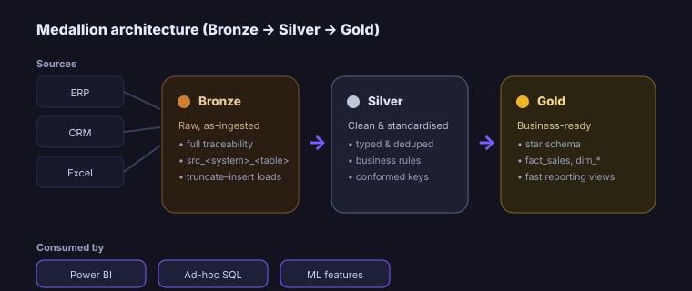

SQL Data Warehouse & Analytics
A modern SQL data warehouse on a Medallion architecture that turns siloed, inconsistent ERP/CRM/Excel data into a trusted, governed foundation, clean, auditable and ready for BI, ad-hoc SQL and machine learning.

End-to-end lifecycle
- Business Problem
Source data was siloed and inconsistent across ERP, CRM and Excel, blocking reliable reporting and forcing analysts to re-clean the same data repeatedly.
- Business Context
The business needed one trusted, governed foundation that BI, ad-hoc analysis and ML could all build on with confidence.
- Data Sources
ERP, CRM and Excel extracts representing core operational and commercial data.
- Data Engineering / ETL
A Medallion pipeline, Bronze (raw, traceable), Silver (clean, standardised), Gold (business-ready), with idempotent truncate-insert batches and clear naming conventions.
- Data Modeling
Star schemas in Gold (
fact_sales,dim_*) for simple joins and fast reporting; version-controlled SQL with a clear bronze/silver/gold structure. - Analytics & Statistical Analysis
Analytics-ready Gold views plus ad-hoc SQL for validation and exploration.
- Visualization & Reporting
Gold layer feeds Power BI dashboards and analyst self-service downstream.
- Machine Learning / AI
Curated Gold views double as clean, consistent feature sources for ML.
- Business Impact
A clean, auditable, scalable foundation that made downstream analytics faster and far more trustworthy.
- Lessons Learned
Layering, naming conventions and documentation are what make a warehouse maintainable; governance is an investment that pays back quickly.